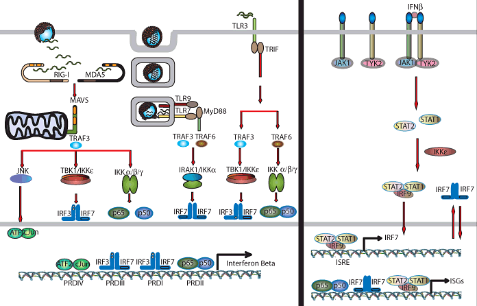

News Archives : 2007 : Ikβ Kinase IKKε Plays Critical Role in Antiviral Innate Immunity
by Tom Maniatis
March 5, 2007
Previous work from our lab identified two functionally redundant kinases called TBK1 and IKKε, which are activated by virus infection, and phosphorylate transcription factors required for IFN-β gene expression. To determine whether IKKε has a unique function in the innate immune response, we knocked out the mouse IKKε gene, and homozygous mutant mice were infected with flu virus. We found that the mutant mice produced normal levels of IFN-β, and they mounted a normal adaptive immune response to the virus. However, they succumbed to the infection at much lower doses than wild type mice. We noticed that the mutants had a higher viral load, and microarray experiments revealed that a subset of ISGs was not activated in response to IFN treatment. This observation suggested that the primary function of IKKε is in the IFN signaling pathway, rather than in the virus induction pathway. This was confirmed by showing that a serine residue in the kinase domain of IKKε is phosphorylated in response to IFN treatment. Moreover, we showed that recombinant IKKε specifically phosphorylates serine 708 of STAT1 and this phosphorylation is required for the stable assembly of ISFG3 and its binding to the promoters of IKKε-dependent ISGs.
Thus, the function of IKKε is to direct the transcriptional machinery to a specific subset of ISGs in response to IFN. Interestingly, this subset of ISGs encodes antiviral proteins that act at the site of virus infection to limit the spread of the virus. In the absence of IKKε, the spread of the virus occurs so rapidly that the mouse succumbs to the infection, even though normal levels of IFN are produced, and the adaptive immune system is activated. This study points out the critical interdependence of the innate and adaptive immune responses in antiviral defenses.
